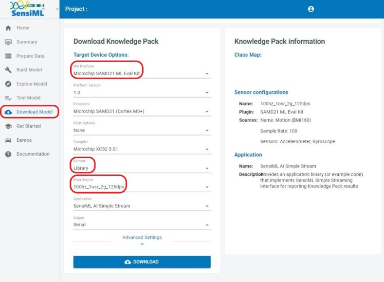
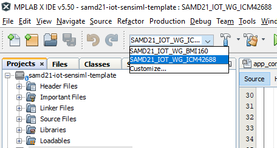
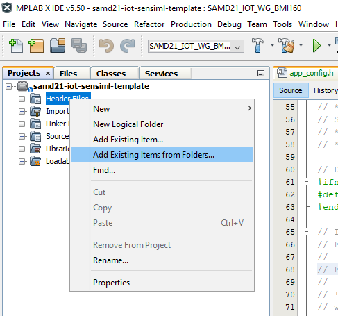
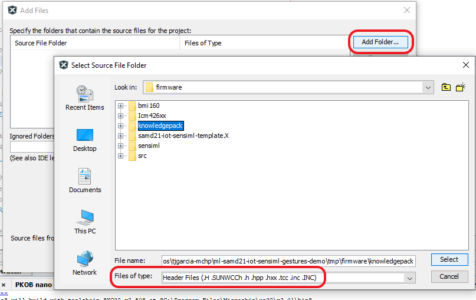
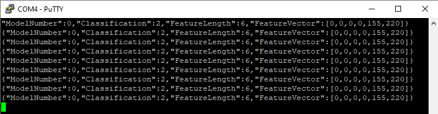

This repository contains an MPLAB X project that can be used as a starting point for running any SensiML Knowledge Pack on the SAMD21 Machine Learning Evaluation Kit (BMI160 or ICM42688 variant). Read on for instructions on how to go from a SensiML Knowledge Pack deployment to a full working MPLAB X project.
To deploy a knowledge pack for the SAMD21 ML Eval Kit:
Microchip SAMD21 ML Eval Kit from the HW Platform options.|  |
|---|
| Deployment from the Analytics Studio |
If you deployed a knowledge pack in the Binary format, the archive should contain the binary file which can be written directly to the SAMD21.
If you deployed a knowledge pack in the Library format, the archive should contain a complete, ready to compile, MPLAB X project. Follow the steps below to compile your project:
firmware folder of the knowledge pack|  |
|---|
| Set the Project Configuration according to sensor |
Your project should now be ready to compile.
If you deployed a knowledge pack in the Source format there are a few manual steps to add the required sensiml files to the MPLAB X project:
firmware folder of this repository.| Set the Project Configuration according to sensor |
|  |
|---|
| Adding knowledge pack header files to your project |
firmware directory and select the knowledgepack directory. Click the Select button to add the directory.
|  |
|---|
Recursively add header files (.h) under the knowledgepack folder |
knowledgepack folder.Your Knowledge Pack is now integrated into your MPLAB X project. You should be able to compile your project and flash it onto the SAMD21.
The firmware behavior can be summarized as operating in one of three distinct states as reflected by the onboard LEDs and described in the table below:
| State | LED Behavior | Description |
|---|---|---|
| Error | Red (ERROR) LED lit | Fatal error. (Do you have the correct sensor plugged in?). |
| Buffer Overflow | Yellow (DATA) and Red (ERROR) LED lit for 5 seconds | Processing is not able to keep up with real-time; data buffer has been reset. |
| Running | Yellow (DATA) LED flashing slowly | Firmware is running normally. |
When operating normally, the firmware prints the classification prediction (classification ID number) and the generated feature vector for each sample window over the UART port. To read the UART port use a terminal emulator of your choice (e.g., MPLAB Data Visualizer's integrated terminal tool) with the following settings:
A sample of the terminal output is shown in the figure below.
|  |
|---|
| UART Terminal Output |
In addition to reading the text output of the firmware with a terminal emulator, the output may be visualized with the SensiML Open Gateway application. Follow the below instructions to get started:
git clone https://github.com/sensiml/open-gateway
pip install -r open-gateway/requirements.txt
BAUD_RATE variable) in open-gateway/config.py to 115200
cd open-gateway
python app.py -m ../firmware/knowledgepack/sensiml/model.json
Recognition device mode.Serial connection type, and enter the UART address (e.g. COM4) in the Device ID field.Connect To Device.Test Mode tab and click Start Stream.